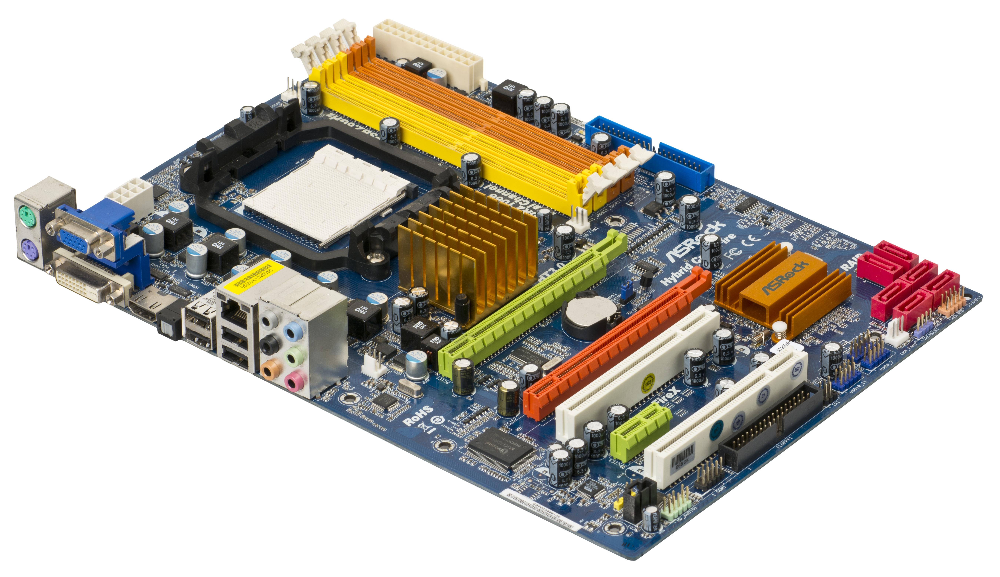

📖 Overview
GPUs are highly parallel processors originally designed for rendering graphics, now widely used for AI, machine learning, and scientific simulations.
⚙️ Architecture & Working Principle
GPUs consist of thousands of smaller, simpler cores compared to CPUs. Architectures like Nvidia's Hopper or AMD's RDNA feature Streaming Multiprocessors, Tensor Cores, and RT Cores.
GPUs excel at SIMD (Single Instruction, Multiple Data) operations, applying the same instruction to multiple data points simultaneously, ideal for pixel rendering and matrix math.
🖼️ Technical Diagrams

Source | License: Public Domain / Creative Commons via Wikimedia